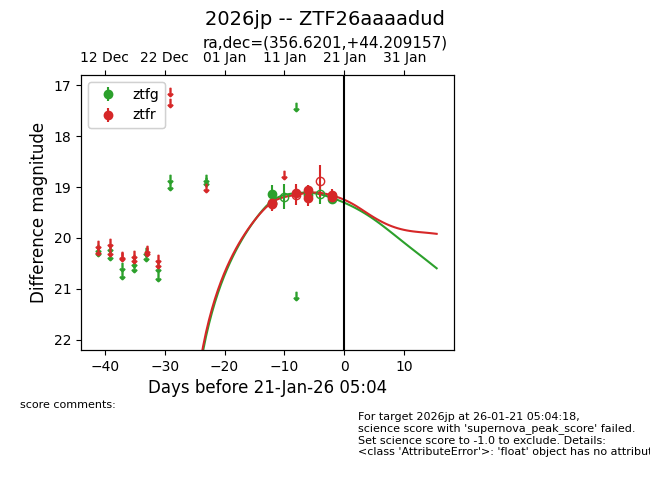
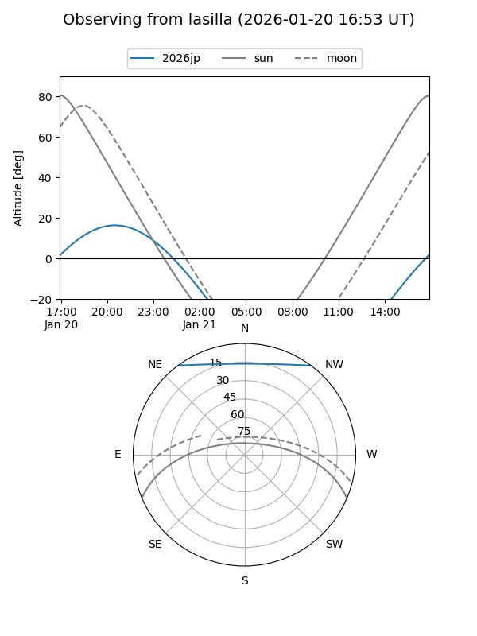
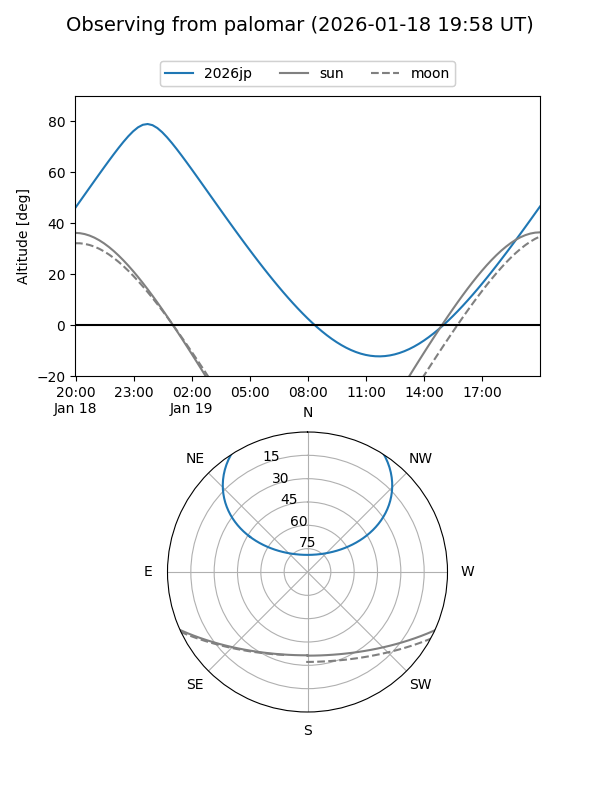
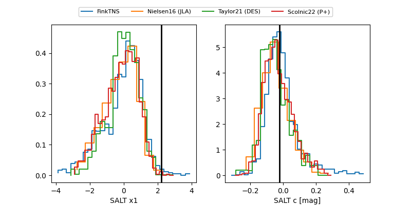

2026jp
Target 2026jp at 2026-01-15 04:55
Aliases and brokers:
FINK: link
Lasair: link
ALeRCE: link
TNS: link
YSE: link
alt names
ZTF26aaaadud (ztf,fink_ztf)
2026jp (tns,yse)
Coordinates:
equatorial (ra, dec) = 356.6201,+44.20916
equatorial (HMS+DMS) = 23:46:28.82,+44:12:32.96
galactic (l, b) = (110.8237,-17.13005)
Flags:
Photometry:
last ztfg=19.14, ztfr=19.11
2 ztfg, 3 ztfr detections
Lightcurve

Visibility


Additional plots
